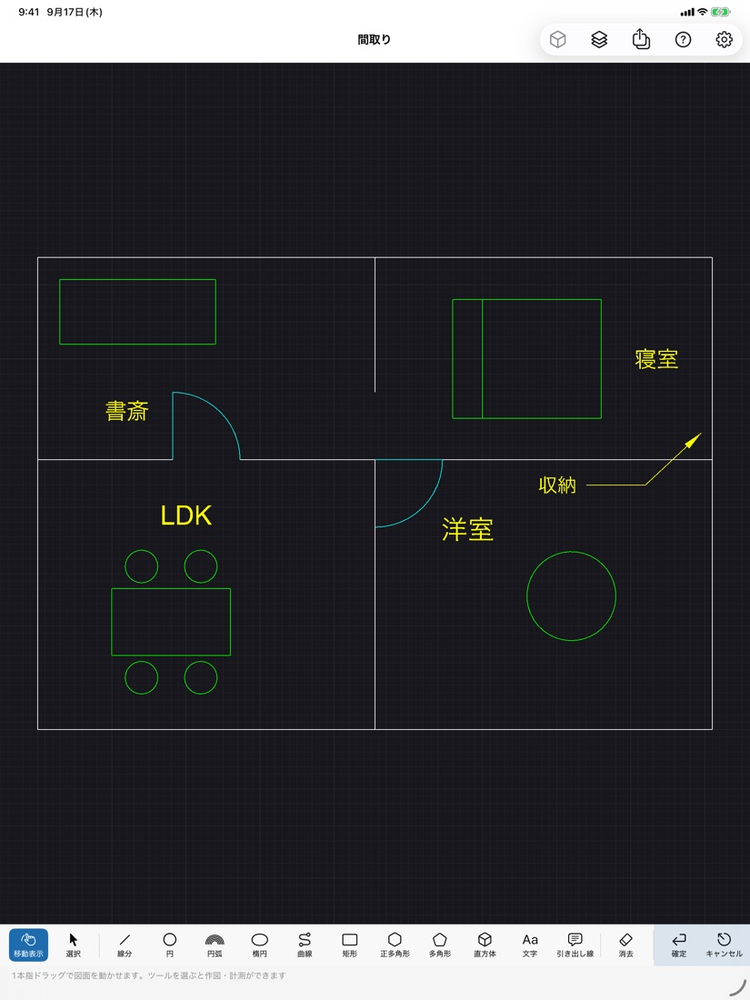
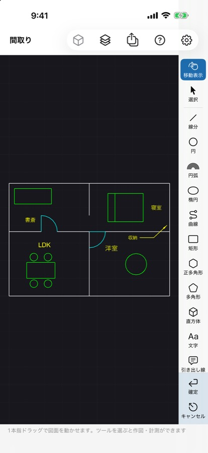
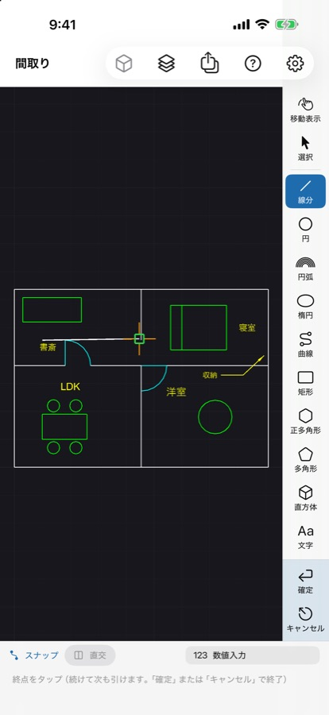
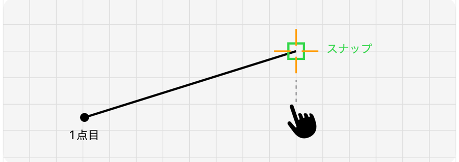
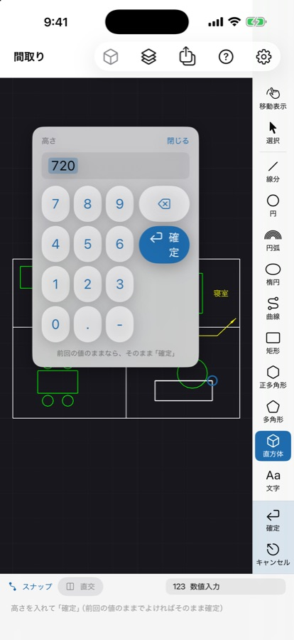
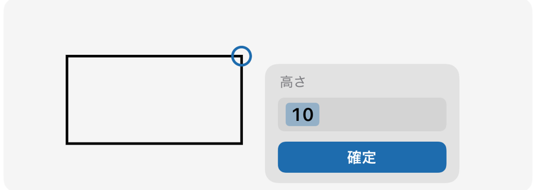
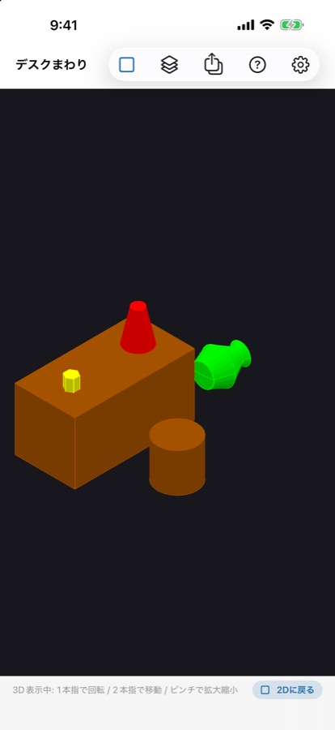
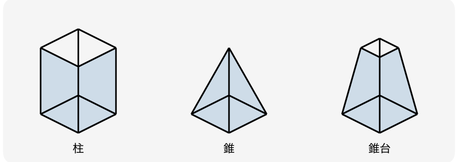
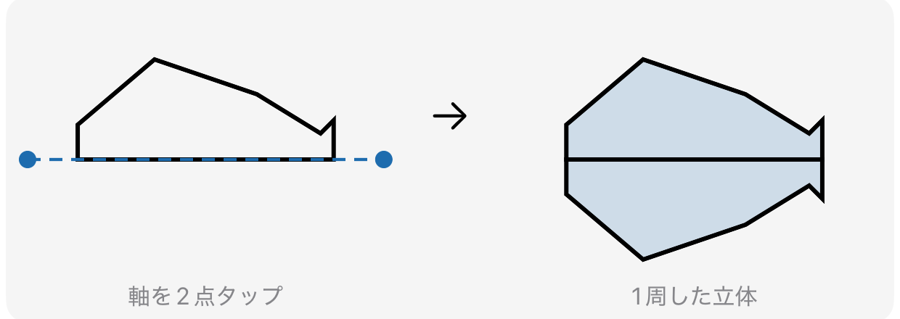
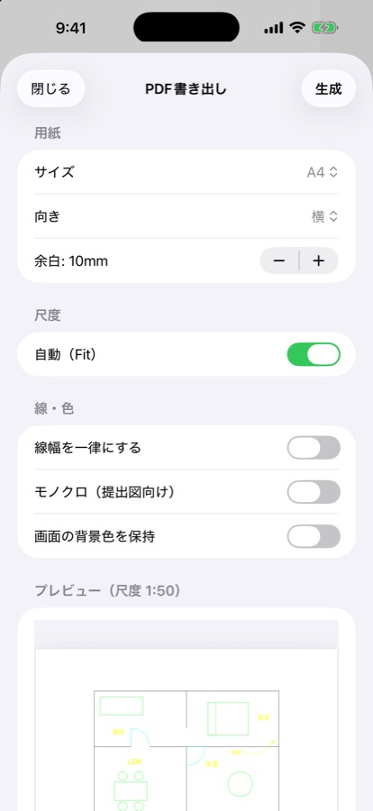

iPhone・iPadで DXF 図面をそのまま開き、ちょっとした書き込みや立体での確認、PDFでの共有ができるアプリです。アカウント登録は不要で、図面は端末（または iCloud Drive）にだけ保存されます。


アプリを起動すると、ファイルの一覧が出ます。DXFファイル（.dxf）を選ぶとそのまま開けます。メールやファイルアプリで受け取ったDXFは、「共有」からこのアプリを選んでも開けます。
新しく描くときは、一覧の「書類を作成」を押します。
元のDXFファイルは書き換えません。書き込んだ内容は、このアプリの図面ファイル（.pcad）として保存されます。
iPhoneではツールの列が画面の右端に、iPadでは画面の下に並びます。
線分・円・円弧・楕円・曲線・矩形・正多角形・多角形・文字・引き出し線が使えます。ツールを選んで、図面の上をタップしていきます。

点はドラッグでも置けます。指を置いたまま動かすと、置かれる位置（橙の十字）と、その点で決まる形が表示され、指を離した位置で決まります。
図形の端点・中点・中心・交点やグリッドの近くでは自動で吸い付き、緑の四角が出ます。
点が指に隠れて見えにくいときは、右上の歯車（設定）→「ドラッグで置く点を指の上にずらす」をオンにしてください。

1点目 → 動かしている間は線の形が見える → スナップ先に緑の四角
数値で正確に描くには、画面下の「数値入力」を押します（長さ 100、角度付き 100<45、座標 50,30、前の点から @10,5）。「直交」をオンにすると縦横だけに引けます。

直方体の高さや正多角形の辺の数のように、図面の上では指せない数値は、最後の点を置くとその近くに入力欄が出ます。
前回の値が選ばれた状態で出るので、同じでよければそのまま 確定、変えるときは数字を押すと置き換わります。入力中は形も値に合わせて変わります。
キャンセル を押すと、最後の点を置く前に戻ります。


押し出し: 閉じた図形（矩形・円・楕円・多角形・閉じた曲線）を選ぶと、ツールの列に「押し出し」が出ます。形（柱・錐・錐台）と高さを決めると立体になり、自動で3D表示に切り替わります。
回転体: 閉じた図形を選んで「回転体」を押し、回転の軸を2点タップします。
直方体: 底面の2点を置き、高さを入れます。
3D表示では1本指で回り込めます（見るだけです）。「2Dに戻る」で元の位置に戻ります。

押し出しの形。錐台は上面を底面の何%にするかを入れます

回転体は、軸の片側に描いた形を軸のまわりに1周させます。図形が軸をまたいでいると作れません

右上の書き出しボタン（PDF書き出し）を押し、用紙サイズ・向き・尺度・線の太さを選んで「生成」を押すと、プレビューが出ます。「共有」からメールやファイルアプリへ送れます。
提出用には「モノクロ」がおすすめです。
ツールの列の端にある色の付いた場所の キャンセル を押すと、「打った点を戻す → ツールを戻す → 選択を解除」の順に1段ずつ戻ります。分からなくなったら連打すれば最初の状態（移動表示）に戻り、それ以上押しても何も起きません。
アプリ内でも、右上の ? から図解つきの使い方を見られます。
開けません。DXF形式（.dxf）に対応しています。お使いのCADでDXFとして書き出してから開いてください。
Shift_JIS（CP932）・UTF-8のDXFに対応しています。それでも化ける図面があれば、差し支えない範囲でファイルをお送りいただけると調査できます。
ハッチング（HATCH）やマルチ引出線（MLEADER）など、まだ読めない図形があります。図面を開いたときに上に出るお知らせ、または右上の「取り込み結果」から、読めなかった図形とその理由を確認できます。
ファイルの一覧で選んだ場所（この端末、または iCloud Drive）に、.pcad 形式で自動保存されます。元のDXFは書き換えません。
アカウント登録は不要です。図面の表示・編集はオフラインでできます。広告の表示にはインターネット接続を使います。
図面を編集する画面には出しません。PDF書き出しの画面と設定画面の下部にバナーが出るほか、PDFを共有し終えたあとに全画面の広告が出ることがあります（1日1回まで。使い始めてから3日間は出ません）。